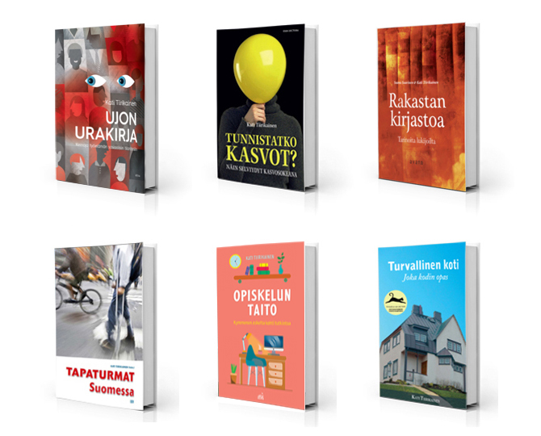

Yhteydenotot: etunimi.sukunimi@gmail.com
Tietokirjat
Uusimmat omat tutkimukset
– Protective factors associated with perceived risk of exclusion from education and work among vocational students. Journal of Adolescence 2026.
– Generalized anxiety among Finnish adolescents: Assessment, correlates, and associations with social anxiety. Tampere University Dissertations 2025.
– Associations of generalized anxiety and social anxiety symptoms with sleep duration, amount of intense exercise, and excessive internet use among adolescents. BMC Psychiatry 2024.
– Alanvaihtoaikeiden yhteys erillisyyden ja merkityksellisyyden kokemuksiin. Ammattikasvatuksen aikakauskirja 2024.
– Associations of generalized anxiety and social anxiety with perceived difficulties in school in the adolescent general population. Journal of Adolescence 2024.
– Eksistentiaalinen psykoterapia ihmisyyden kysymysten kohtaamisessa. Psykoanalyyttinen Psykoterapia 2023.
– Merkityksellisyyden kokemuksen yhteys nuorten oppimiin taitoihin ja työnsaantiasenteisiin työuran alkupuolella. Nuorisotutkimus 2023.
– Psykoterapeutin kuolevaisuuden kohtaaminen ja kuolemaan varautuminen. Psykoterapia 2022.
– Musiikin yhteys tiedostamattomaan. Psykoanalyyttinen Psykoterapia 2022.
– Vapaudesta ja ammatinvalinnasta. Psykoterapia 2021.
– Terapiasuhteen vuorovaikutuksen yhteydestä kuntoutuspsykoterapioissa koettuihin työkyvyn muutoksiin. Psykoanalyyttinen Psykoterapia 2021.
– Epäonnistumisten tarpeellisuudesta psykoterapiatyössä. Psykoterapia 2021.
– Psychometric properties of the 7-item Generalized Anxiety Disorder Scale (GAD-7) in a large representative sample of Finnish adolescents. Psychiatry Research 2019.